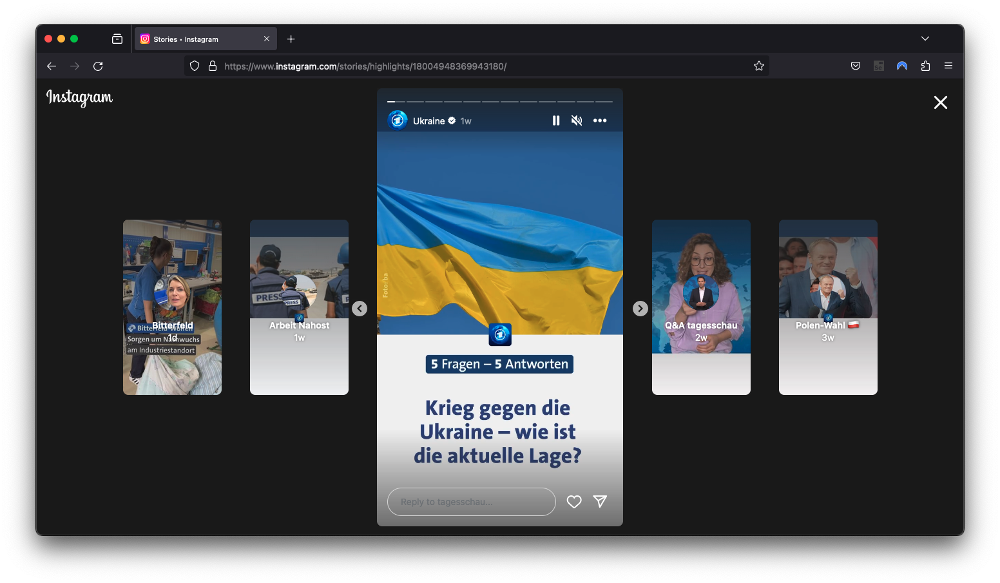
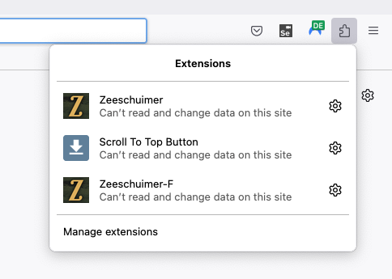
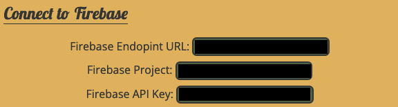
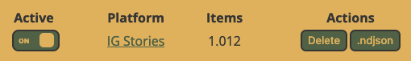

Instagram stories, characterized by their ephemeral nature, expire after 24 hours. Therefore, it’s crucial to collect them in a timely manner, as retrospective data collection is not an option with this format. There are two feasible methods: Instaloader and Zeeschuimer-F. Additionally, commercial tools such as 4k Stogram are also available.

A screenshot of stories by @tagesschau opened in the firefox browser
Overall, the ephemeral nature of stories necessitates our continuous monitoring and data collection from our targeted profiles. To ensure that we capture every story item, I recommend collecting stories twice daily, approximately 12 hours apart. This method accounts for potential inaccuracies in timing, as the intervals overlap. Data can be gathered manually or through computational means. The manual approach, especially in conjunction with Zeeschuimer-F, is preferable as it does not violate the Terms of Service (TOS). For this method, we would install the plugin and view all stories in our browser twice daily. Alternatively, using Instaloader involves simply initiating the command and waiting for the software to gather all the data. Optimally, we could utilize tools like Cron to automate this process.
Instaloader
Instaloader for Stories operates in a manner akin to collecting Posts. Initially, the package must be installed:
!pip -q install instaloader
Unlike the method outlined in the previous tutorial, I advise employing the command-line interface of Instaloader for collecting stories. To do this, open a terminal and execute the command below:
Executing this command generates a dedicated subfolder within ig_stories for each user followed by your profile. It downloads the metadata, images, and videos of each story. The metadata is saved in a JSON file. While these files are typically xz-compressed by default, using the --no-compress-json option prevents this compression. Subsequently, the JSON files can be imported into a pandas DataFrame in Python.
This process can be automated, for example, by utilizing a bash script in conjunction with cron:
#!/bin/bash# Generate a random number of seconds between 0 and 3600 (1 hours)sleep_duration=$((RANDOM%3600))# Print the sleep durationecho"Sleeping for $sleep_duration seconds..."# Sleep for the random durationsleep$sleep_duration# Run Instaloader command to download the latest Instagram storiesinstaloader--login your.profile.name --dirname-pattern ~/ig_stories/{profile} :stories --no-compress-json# Add more script to check for success and send alerts in case of error
Start cron by entering crontab -e on your terminal and add a line pointing to the bash script, e.g.:
This method is based on the Zeeschuimer Firefox Plugin. I have adapted the original plugin to create Zeeschuimer-F, which is specifically tailored for collecting Instagram stories and interfacing with the Zeeschuimer-Firebase-Backend for real-time data collection. You can find Zeeschuimer-F on GitHub. To use it, download the latest version via Firefox and install the plugin. For our seminar, I’ll provide a backend instance; refer to the README.md on GitHub for guidance on setting up your own instance on Firebase. Credentials for our seminar will be distributed through GRIPS. Follow these steps to download stories using Zeeschuimer-F:
Download and install the plugin.
Create a project on the backend (via Notebook).
Configure the plugin.
Regularly view stories in Firefox to collect them.
Download the collected data (via Notebook).
Plugin Installation
To install the plugin, download the latest release .xpi file from GitHub using Firefox. After downloading, click on the file in Firefox and confirm the installation of the extension.

Screenshot of Firefox with the open extensions menu
Verify the extension’s installation by checking the right-hand menu in Firefox. We will return to the browser shortly.
The Firebase Interface Notebook
Project Creation
The following lines of code assume that the firebase Credential File has been downloaded from GRIPS and uploaded to Colab / your Jupyter project path. First of all install the necessary packages:
!pip -q install firebase-admin
Next, we connect to our firebase project. Please update the credentials_path variable with the path to your credentials file (see above).
Please provide an alert_email and project_name to create a new project on the backend. The backend checks hourly when the last stories have been uploaded to a project. If no story has been uploaded for more than 12 hours, an email alert will be triggered.
Run the cell to create the new project on the backend. When successfull, the project id and api key will be displayed.
from IPython.display import display, Markdownimport pandas as pdalert_email ='michael@achmann.me'project_name ='Forschungsseminar23 Test'# Create Projectimport uuid# Generate a UUID for the documentproject_id =str(uuid.uuid4())api_key =str(uuid.uuid4())# Your datadata = {"api_key": api_key,"email": alert_email,"name": project_name}# Add a new document with a UUID as the document name (ID)doc_ref = db.collection('projects').document(project_id)doc_ref.set(data)display(Markdown("### Project Created:"))display(Markdown(f"**Project Name:** {project_name}"))display(Markdown(f"**Alert Email:** {alert_email}"))display(Markdown(f"**Project ID:** {project_id}"))display(Markdown(f"**API-Key:** {api_key}"))
Project Created:
Project Name: Forschungsseminar23 Test
Alert Email: michael@achmann.me
Project ID: 959466fe-4088-4099-a6b2-3cbe058889d3
API-Key: 554fbce8-fb15-44f1-bb4d-54cdc57554f2
Configure the Plugin
Configure Zeeschuimer-F using the above information after creating a project. In order to access the settings of Firefox plugins click on the puzzle tile on the top right of the browser. Click on Zeeschuimer F and the settings open.
Screenshot of Firefox with open extensions menu
Fill in the Firebase Project field with the project id and aFirebase API Key with the api key provided after running the Project Creation. The Firebase Endopint URL will be provided via GRIPS (unless you’ve installed your own instance).

Screenshot of the Settings for Zeeschuimer-F
1) Turn the IG Stories Switch on, 2) restart your browser for the values to be loaded correctly. Once the browser has started again, you’re ready to collect you first stories! Open the Instagram website and open any story.

Screenshot of the switch
Check the extension settings page to see whether it is collecting stories while browsing. The counter should increase with each story visit. The remote collection process can currently only be checked through the Firebase Interface notebook. Follow the next steps to download the collected data.
Project Export
The following code downloads all stories in JSON format and saves it locally (i.e. on your colab instance). Provide the PROJECT_ID variable and an export_path to download all stories.
from tqdm.auto import tqdmimport osimport jsonPROJECT_ID ='959466fe-4088-4099-a6b2-3cbe058889d3'export_path ='/content/export'def fetch_stories(project_id): stories_ref = db.collection('projects').document(project_id).collection('stories') docs = stories_ref.stream() stories = []for doc in docs: stories.append(doc.to_dict())return storiesdb = fetch_stories(PROJECT_ID)ifnot os.path.exists('export'): os.makedirs('export')# Iterate over each element in the databasefor element in tqdm(db, desc='Exporting elements'):# Serialize the element to JSON element_json = json.dumps(element, indent=4)# Write to a file named {id}.jsonwithopen(os.path.join('export', f"{element['id']}.json"), 'w') as f: f.write(element_json)
Convert to DataFrame
Next, we convert the exported JSON files to a pandas DataFrame and save the table as CSV. Provide the df_export_path variable for the location where to save the exported CSV file.
Work-In-Progress
The DataFrame in the current version has a different structure than the one we created when downloading Instagram Posts.. In order to compare stories with posts we will might want to use the same data structure.
import pandas as pdfrom datetime import datetime, timedeltadf_export_path ='/content/2022-11-09-Stories-Exported.csv'def process_instagram_story(data):# Extract relevant information story_info = {'ID': data.get("id"),'Time of Posting': datetime.utcfromtimestamp(data['taken_at']).strftime('%Y-%m-%d %H:%M:%S'),'Type of Content': 'Video'if'video_duration'in data else'Image','video_url': None,'image_url': None,'Username': data['user']['username'],'Video Length (s)': data.get('video_duration', None),'Expiration': (datetime.utcfromtimestamp(data['taken_at']) + timedelta(hours=24)).strftime('%Y-%m-%d %H:%M:%S'),'Caption': data.get('caption', None),'Is Verified': data['user']['is_verified'],'Stickers': data.get('story_bloks_stickers', []),'Accessibility Caption': data.get('accessibility_caption', ''),'Attribution URL': data.get('attribution_content_url', '') }return story_inforows = []for element in db: rows.append(process_instagram_story(element))df = pd.DataFrame(rows)df.to_csv(df_export_path)print(f"Successfully exported {len(df)} rows as CSV.")
Successfully exported 22 rows as CSV.
Now let’s take a look at the structure of the exported data:
df.head()
ID
Time of Posting
Type of Content
video_url
image_url
Username
Video Length (s)
Expiration
Caption
Is Verified
Stickers
Accessibility Caption
Attribution URL
0
3231585718932790545_1483455177
2023-11-08 14:50:59
Image
<NA>
https://storage.googleapis.com/zeeschuimer-fb-...
rmf24.pl
NaN
2023-11-09 14:50:59
None
False
[]
Photo by Fakty RMF FM | Rozmowy | Podcasty on ...
1
3231585778860997221_1483455177
2023-11-08 14:51:06
Image
<NA>
https://storage.googleapis.com/zeeschuimer-fb-...
rmf24.pl
NaN
2023-11-09 14:51:06
None
False
[]
Photo by Fakty RMF FM | Rozmowy | Podcasty on ...
2
3231750838597692854_1349651722
2023-11-08 20:19:00
Video
https://storage.googleapis.com/zeeschuimer-fb-...
<NA>
tagesschau
13.300
2023-11-09 20:19:00
None
True
[]
3
3231750989408058657_1349651722
2023-11-08 20:19:18
Video
https://storage.googleapis.com/zeeschuimer-fb-...
<NA>
tagesschau
15.267
2023-11-09 20:19:18
None
True
[]
4
3231751135118088390_1349651722
2023-11-08 20:19:35
Video
https://storage.googleapis.com/zeeschuimer-fb-...
<NA>
tagesschau
17.000
2023-11-09 20:19:35
None
True
[]
Download Images and Videos
All videos and images for our Instagram stories have been downloaded by our firebase backend. They are saved in a Cloud Bucket. The following cell helps with these two steps:
Create a signed link to each video and image
Download each file and saves it in the following structure: {media_export_path}/{image|video}/{username}/{ID.jpg|mp4}. It is important to keep a unique identifier (here ID) to map metadata and images for future data analysis.
Please provide a storage_bucket and media_export_path.
storage_bucket ="XXXX.appspot.com"media_export_path ='/content/media/'from firebase_admin import storageimport osimport requestsbucket = storage.bucket(storage_bucket)def generate_signed_url(username, content_id, file_type):if file_type notin ['images', 'videos']:raiseValueError("Invalid file type specified") ext ='jpeg'if file_type =='images'else'mp4' blob_path =f"projects/{PROJECT_ID}/stories/{file_type}/{username}/{content_id}.{ext}" blob = bucket.blob(blob_path)# Set the expiration of the link. Here, it's set to 24 hours.return blob.generate_signed_url(expiration=timedelta(hours=24), method='GET')# Create a function to be applied across DataFrame rowsdef apply_generate_signed_url(row): image_url = generate_signed_url(row['Username'], row['ID'], 'images') video_url = generate_signed_url(row['Username'], row['ID'], 'videos') if row['Type of Content'] =='Video'else pd.NAreturn pd.Series({'image_url': image_url, 'video_url': video_url})# Apply the function along the axis=1 (row-wise)df[['image_url', 'video_url']] = df.apply(apply_generate_signed_url, axis=1)# Now, creating the lists for images and videos can be done more efficientlydata_images = df.loc[df['image_url'].notna(), ['ID', 'image_url', 'Username', 'Time of Posting']] \ .rename(columns={'image_url': 'url', 'Time of Posting': 'datetime'}) \ .to_dict('records')data_videos = df.loc[df['video_url'].notna(), ['ID', 'video_url', 'Username', 'Time of Posting']] \ .rename(columns={'video_url': 'url', 'Time of Posting': 'datetime'}) \ .to_dict('records')def create_directories(base_path, entries, subdir): usernames =set(entry['Username'] for entry in entries)for username in usernames: os.makedirs(os.path.join(base_path, subdir, username), exist_ok=True)def download_file(entry, media_type, media_export_path, session): directory = os.path.join(media_export_path, media_type, entry['Username']) ext ='jpg'if media_type =='images'else'mp4' filename = os.path.join(directory, f"{entry['ID']}.{ext}")with session.get(entry['url'], stream=True) as response:if response.status_code ==200:withopen(filename, 'wb') asfile:for chunk in response.iter_content(8192):file.write(chunk)else:print(f"Failed to download {entry['url']}. Status code: {response.status_code}")session = requests.Session()# Pre-create directoriescreate_directories(media_export_path, data_images, 'images')create_directories(media_export_path, data_videos, 'videos')# Download imagesfor entry in tqdm(data_images, desc="Downloading Images", unit="file"): download_file(entry, 'images', media_export_path, session)# Download videosfor entry in tqdm(data_videos, desc="Downloading Videos", unit="file"): download_file(entry, 'videos', media_export_path, session)print("Download complete!")
Download complete!
Prepare Downloadable ZIP
Run the following to ZIP all files. Optionally copy them to Google Drive.
We need to manually browse the stories twice a day (can be automated using Selenium)
Data is collected on firebase storage, we need to export to use it
Conclusion
This page offers an overview of two methods for collecting ephemeral Instagram stories, which are crucial to capture in real time due to their 24-hour expiration period. The first method, instaloader, is theoretically effective. However, similar to the case with posts, Instagram accounts utilizing Instaloader face a high risk of being banned swiftly.
The second approach adopts a less invasive strategy. It involves capturing the data transmitted to the browser while viewing stories on Instagram, and then transferring the metadata to our Firebase project. Upon the addition of a new story to the database, the backend initiates the download of videos and images for that story.
To facilitate this process, I have provided a notebook for project creation, a manual for configuring the plugin, and additional code to export the captured stories via a Jupyter notebook.
![]()